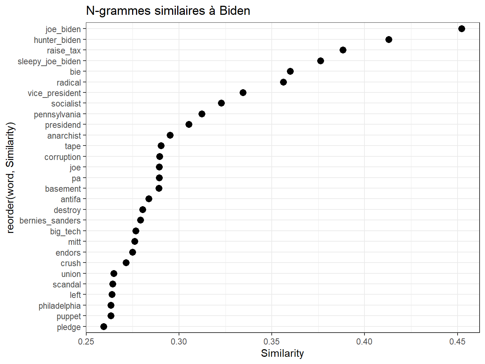
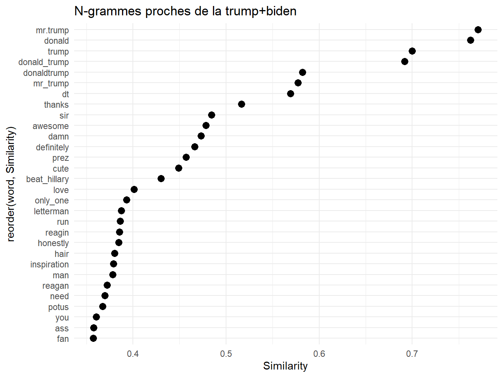
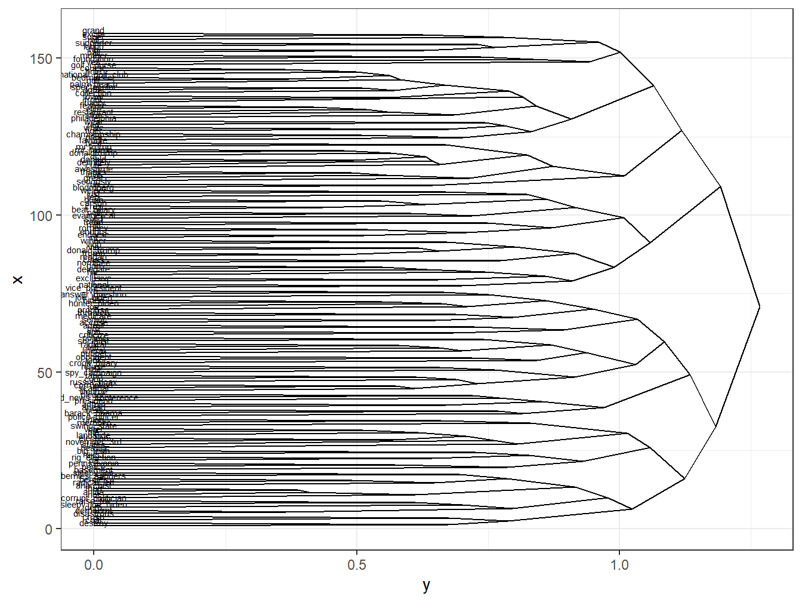

Chapitre 15 Vectorisation du corpus
C’est sans doute l’idée la plus novatrice que l’approche computationnelle du langage a apporté ces 10 dernières années. Le modèle word2vec de Mikolov(2013) en est une première version, d’autres ont apporté des amélioration comme le modèle Glove.
L’idée fondamentale est qu’on peut représenter des mots dans un espace de grande dimension par des vecteurs. Ce qui importe c’est de conserver la relation entre mots dans cet espace. Deux mots très corrélés, au sens de leur cooccurences, doivent l’être avec la même intensité dans cet espace. Admettant que le cosinus de l’angle entre deux vecteurs est équivalent à leur corrélation, on comprend aisément que la vectorisation consiste à identifier un jeu de coordonnées, les paramètres des vecteurs mots, en connaissant les angles qu’is forment entre eux.
De manière imaginée, il s’agit de représenter le vocabulaire d’un corpus ( et si ce corpus est celui de tous les corpus, d’une langue) sous la forme d’un oursin. Mais dans un espace à de 100 à 1000 dimensions. Si les oursins pointent leurs aiguilles dans toutes les directions, celles-ci sont contraintes à trois dimensions.
Oursin
Pour estimer les coordonnée des vecteurs deux méthodes peuvent être employée simultanéement.
Les mots observés, dont on peut prédire le contexte (Skip-gram)
Les éléments du contexte observés, dont on peut prédire le mot (CBOW)
L’idée de plongement lexical tient alors dans cette dynamique double d’identification et de rattachament des éléments textuels ensembles, selon différentes méthodes de vraisemblance/mesure.
Le caractère remarquable de la méthode c’est qu’il est posible d’opérer des opérations algébriques, l’exemple canonique est celui de
reine = Roi+Homme - Femme

vecteur
15.1 Application avec Word2vec
pour la mise en oeuvre on emploie le package WordVec de BenJamin Schmidt sur le corpus Trump.
Dans un premier temps on exploite les éléments présentés dans les chapitre précédents pour pré-processer le texte et le transformer en une séquence de termes bien tempérés : on va transformer les tweets en une séquences de lemmes, en ne gardant que les unités pleinement signifiantes : noms communs, adjectifs et adverbes, verbes. En quelque sorte un excercice de condensation du langage sur ses unités les plus signifiantes.
C’est aussi l’occasion de rappeler que ce qui importe dans le traitement du langage est de réduire les variations de formes pour mieux capturer les significations.
15.1.1 Préparer et annoter grammaticalement les données
On prépare les données en “résumant” les tweets à leur plus simple expression
d’abord on tokenize, et on réduit les tokens en suprrimant les symbole, les nombre, en mettant en minuscules etc
df_trump<- read_csv("./data/TrumpTwitterArchive01-08-2021.csv")
#lecture de l'ensemble de nos tweets
obj<-df_trump$text
foo<-tokens(obj, remove_punct = TRUE,
remove_symbols = TRUE,
remove_numbers = TRUE,
remove_url = TRUE,
remove_separators = TRUE,
split_hyphens = FALSE,
padding = FALSE) %>%
tokens_remove(pattern = c("*.tt", "*.uk", "*.com", "rt", "#*", "@*","amp", "RT")) %>%
tokens_select(pattern="<U+.*", selection = "remove", valuetype = "regex")%>%
tokens_tolower()
#on reconstitue la chaine de caractère à partir des tokens transformés
foo1<-data.frame(
id = seq_along(foo),
text = sapply(foo, paste, collapse = " "),
row.names = NULL
)et on fait de l’annotations POS, comme étudié dans le chapitre X. attention ç a peut prendre du temps. 35 mn sur notre machine. c’est pourquoi nous ajoutons un petit dispositif de calcul de temps pour se donner une maitrise des ajustements. le traitement du texte consomme parfois beaucoups de ressources, et il est utile d’en contrôler l’usage.
library(cleanNLP) #pour les POS et Dépendences syntaxiques
# initialisation du modèle , ici udpipe, mais aussi spacy corenlp ou stringi
#(un travail devrait être de comparer ces méthodes par le taux de couvrement!!!!)
cnlp_init_udpipe(model_name = "english")
#Annotation des tweets afin de pouvoir identifier les stopwords
t0<-Sys.time() #date de départ
Vocab<-cnlp_annotate(foo1$text,verbose=10000) #le verbose fixe la notification du nombre d'éléments traités, c'est utiles pour savoir si on va juste prendre un café ou aller déjeuner
t1<-Sys.time() #date de fin.... juste pour controler une opération qui peut prendre 40 mn sur un processeur 4 coeurs à 3.6ghz et 32go de ram.
#on conseille d'échantillonner d'abord
t<-t1-t0
t
write_rds(Vocab,"./data/Vocab.rds")donc l’opération aura pris t minutes.
Et un peu de filtrage sur les POS afin de se contreer sur les unités signifiantes.
Vocab <-readRDS ("./data/Vocab.rds")
foo<-as.data.frame(Vocab[c("token")]) # il faut changer de format
#on filtre adverbes adjectifs verb et non communs
updated_vocab <- foo %>% filter(token.upos %in% c('ADV','ADJ','VERB', 'NOUN'))
#on crée une chaine de caractère qui concatène les lemmes filtrés
all_tweets <- paste(updated_vocab['token.lemma'], sep= " ")
#on génère le fichier de ces tweets "purifiés"
write.table(all_tweets, file="./data/tweets.txt")15.1.2 WordVectors au travail
Deux étapes
- un preprocessing, qui permet de prendre en compte les ngrams
- l’entrainement du modèle
#install.packages("remotes")
#remotes::install_github("bmschmidt/wordVectors")
library(wordVectors)
#Nettoyage des tweets et identification des n-grammes en vue d'entraîner le modèle
prep_word2vec(origin="./data/tweets.txt",destination="./data/trump_vec.txt",lowercase=T,bundle_ngrams=3)## Starting training using file ./data/trump_vec.txt
## Words processed: 100K Vocab size: 78K
Words processed: 200K Vocab size: 144K
Words processed: 300K Vocab size: 202K
Words processed: 400K Vocab size: 253K
Words processed: 500K Vocab size: 302K
## Vocab size (unigrams + bigrams): 177244
## Words in train file: 566121
## Words written: 100K
Words written: 200K
Words written: 300K
Words written: 400K
Words written: 500K
Starting training using file ./data/trump_vec.txt_
## Words processed: 600K Vocab size: 32K
Words processed: 700K Vocab size: 108K
Words processed: 800K Vocab size: 178K
Words processed: 900K Vocab size: 235K
Words processed: 1000K Vocab size: 290K
## Vocab size (unigrams + bigrams): 181767
## Words in train file: 1098545
## Words written: 100K
Words written: 200K
Words written: 300K
Words written: 400K
Words written: 500K#Création et entraînement du modèle vectoriel
model = train_word2vec("./data/trump_vec.txt",
"./data/trump.bin",
vectors=200,threads=3,
window=5,
iter=10,negative_samples=0,
force=TRUE,
min_count=30)## Starting training using file C:/Users/33623/Documents/_bibliographie/MethodologieQuantitative/Chapitre20NLP/_BookdownNLP/NLPBook/data/trump_vec.txt
## 100K
200K
300K
400K
500K
Vocab size: 2270
## Words in train file: 416630
##
|
| | 0%
|
| | 1%
|
|= | 1%
|
|= | 2%
|
|== | 2%
|
|== | 3%
|
|== | 4%
|
|=== | 4%
|
|=== | 5%
|
|==== | 5%
|
|==== | 6%
|
|===== | 6%
|
|===== | 7%
|
|===== | 8%
|
|====== | 8%
|
|====== | 9%
|
|======= | 9%
|
|======= | 10%
|
|======= | 11%
|
|======== | 11%
|
|======== | 12%
|
|========= | 12%
|
|========= | 13%
|
|========= | 14%
|
|========== | 14%
|
|========== | 15%
|
|=========== | 15%
|
|=========== | 16%
|
|============ | 16%
|
|============ | 17%
|
|============ | 18%
|
|============= | 18%
|
|============= | 19%
|
|============== | 19%
|
|============== | 20%
|
|============== | 21%
|
|=============== | 21%
|
|=============== | 22%
|
|================ | 22%
|
|================ | 23%
|
|================ | 24%
|
|================= | 24%
|
|================= | 25%
|
|================== | 25%
|
|================== | 26%
|
|=================== | 26%
|
|=================== | 27%
|
|=================== | 28%
|
|==================== | 28%
|
|==================== | 29%
|
|===================== | 29%
|
|===================== | 30%
|
|===================== | 31%
|
|====================== | 31%
|
|====================== | 32%
|
|======================= | 32%
|
|======================= | 33%
|
|======================= | 34%
|
|======================== | 34%
|
|======================== | 35%
|
|========================= | 35%
|
|========================= | 36%
|
|========================== | 36%
|
|========================== | 37%
|
|========================== | 38%
|
|=========================== | 38%
|
|=========================== | 39%
|
|============================ | 39%
|
|============================ | 40%
|
|============================ | 41%
|
|============================= | 41%
|
|============================= | 42%
|
|============================== | 42%
|
|============================== | 43%
|
|============================== | 44%
|
|=============================== | 44%
|
|=============================== | 45%
|
|================================ | 45%
|
|================================ | 46%
|
|================================= | 46%
|
|================================= | 47%
|
|================================= | 48%
|
|================================== | 48%
|
|================================== | 49%
|
|=================================== | 49%
|
|=================================== | 50%
|
|=================================== | 51%
|
|==================================== | 51%
|
|==================================== | 52%
|
|===================================== | 52%
|
|===================================== | 53%
|
|===================================== | 54%
|
|====================================== | 54%
|
|====================================== | 55%
|
|======================================= | 55%
|
|======================================= | 56%
|
|======================================== | 56%
|
|======================================== | 57%
|
|======================================== | 58%
|
|========================================= | 58%
|
|========================================= | 59%
|
|========================================== | 59%
|
|========================================== | 60%
|
|========================================== | 61%
|
|=========================================== | 61%
|
|=========================================== | 62%
|
|============================================ | 62%
|
|============================================ | 63%
|
|============================================ | 64%
|
|============================================= | 64%
|
|============================================= | 65%
|
|============================================== | 65%
|
|============================================== | 66%
|
|=============================================== | 66%
|
|=============================================== | 67%
|
|=============================================== | 68%
|
|================================================ | 68%
|
|================================================ | 69%
|
|================================================= | 69%
|
|================================================= | 70%
|
|================================================= | 71%
|
|================================================== | 71%
|
|================================================== | 72%
|
|=================================================== | 72%
|
|=================================================== | 73%
|
|=================================================== | 74%
|
|==================================================== | 74%
|
|==================================================== | 75%
|
|===================================================== | 75%
|
|===================================================== | 76%
|
|====================================================== | 76%
|
|====================================================== | 77%
|
|====================================================== | 78%
|
|======================================================= | 78%
|
|======================================================= | 79%
|
|======================================================== | 79%
|
|======================================================== | 80%
|
|======================================================== | 81%
|
|========================================================= | 81%
|
|========================================================= | 82%
|
|========================================================== | 82%
|
|========================================================== | 83%
|
|========================================================== | 84%
|
|=========================================================== | 84%
|
|=========================================================== | 85%
|
|============================================================ | 85%
|
|============================================================ | 86%
|
|============================================================= | 86%
|
|============================================================= | 87%
|
|============================================================= | 88%
|
|============================================================== | 88%
|
|============================================================== | 89%
|
|=============================================================== | 89%
|
|=============================================================== | 90%
|
|=============================================================== | 91%
|
|================================================================ | 91%
|
|================================================================ | 92%
|
|================================================================= | 92%
|
|================================================================= | 93%
|
|================================================================= | 94%
|
|================================================================== | 94%
|
|================================================================== | 95%
|
|=================================================================== | 95%
|
|=================================================================== | 96%
|
|==================================================================== | 96%
|
|==================================================================== | 97%
|
|==================================================================== | 98%
|
|===================================================================== | 98%
|
|===================================================================== | 99%
|
|======================================================================| 99%
|
|======================================================================| 100%La taille du vocabulaire est de 2306 pour 401445 mots dans le fichier d’entraînement. Ils se présente sous la forme d’un tableau de 2306 termes, et de 200 colonnes.
15.2 Exploiter le modèle
Le résultat de ce traitement est un tableau comprenant \(m\) termes, et \(k\) dimensions. l’espace du langage qui était un tableau de coocurrence de taille \(m.m\) a été réduit à un tableau de \(m.k\) dimension. Si nous avions 1000 mots dans le vocabulaire et que nous le représentant en 100 dimensions, alors qu’il fallait \(m*(m-1)/2)\) paramètres, soit presque 500k, l’information est réduite à \(m*k\) paramètres soit 100k. d’une certaine manière la vectorisation compresse les données.
pour exploiter cette représentation, une première manière de faire est de rechercher dans le corpus les termes les plus associés à un terme cible. Quel est son contexte le plus proche? La cible de Trump, on n’en doute pas est Biden.
Pour exploiter ce tableau des fonctions pratiques sont proposées dans le package. la principale closest_to qui permet de selectionner les termes les plus proches, en termes de cosinus, du vecteur cible.
Dans l’exemple suivant, on cherche à mieux saisir le concept de “biden”, dans le discours de Trump. On examine les trentes termes les plus proches. On constate un procédé général de disqualification, peut-être même d’infra-humanisation. Une diabolisation certainement : “crooked”, “sleepy”…
foo<-model %>%
closest_to(~"biden",30)%>%
filter(word!="biden") #on choisit les 30 termes les plus proches, sauf biden
foo$Similarity<-foo[,2] #juste pour renommer la variable
g1<-ggplot(foo, aes(x=reorder(word,Similarity),y=Similarity))+
geom_point(col="black",size=3)+
coord_flip()+
ggtitle("N-grammes similaires à Biden")
g1
Répétons l’expérience sur Trump lui- même. Cute, awsome, clairement un narcissiste.
foo<-model %>%
closest_to(~"trump",30)%>%
filter(word!="trump") #on choisit les 30 termes les plus proches, sauf biden
foo$Similarity<-foo[,2] #juste pour renommer la variable
g1<-ggplot(foo, aes(x=reorder(word,Similarity),y=Similarity))+
geom_point(col="black",size=3)+
coord_flip()+
ggtitle("N-grammes similaires à trump")
g1On peut affiner le concept de -trump en faisant la somme de ses noms. On laisse le lecteur faire son interprétation.
foo<-model %>% wordVectors::closest_to(~("trump"+"donald_trump"+"mr.trump"+"donald"),30)
foo$Similarity<-foo[,2]
g1<-ggplot(foo, aes(x=reorder(word,Similarity),y=Similarity))+
geom_point(col="black",size=3)+coord_flip()+theme_minimal()+
ggtitle("N-grammes proches de la trump+biden")
g1
Quand on soustrait “Biden” du concept de “president trump”, c’est Melania qui apparait.
foo<-model %>% wordVectors::closest_to(~("trump"+ "president"-"biden"),30)
foo$Similarity<-foo[,2]
g1<-ggplot(foo, aes(x=reorder(word,Similarity),y=Similarity))+geom_point(col="black",size=3)+
coord_flip()+
theme_minimal()+
scale_y_log10()+ggtitle("N-grammes proches de trump-Biden")
g115.3 Un clustering et une projection tsne
q_words = c("trump", "biden")
term_set = lapply(q_words,
function(q_word) {
nearest_words = model %>% closest_to(model[[q_word]],80)
nearest_words$word
}) %>% unlist
subset = model[[term_set,average=F]]
subset1<-as.data.frame(subset@.Data)calculer tous les cosinus
# un calcul de dissimilarité sur la base des cosinus
#la fonction habituel dist ne le permetpas
Matrix <- as.matrix(subset1)
sim <- Matrix / sqrt(rowSums(Matrix * Matrix))
sim <- sim %*% t(sim)
#on transforme en distance la similarité cosinus, celle ci varie de 0 à 2.
D_sim <- as.dist(1 - sim)clustering
#un clustering hiérarchique avec 10 groupes
clus<-hclust(D_sim)
groupes<- cutree(clus,k=10)
library(ggdendro)
ggdendrogram(clus, rotate=TRUE ,type = "triangle")ddata <- dendro_data(clus, type = "triangle")
ggplot(segment(ddata)) +
geom_segment(aes(x = x, y = y, xend = xend, yend = yend)) +
coord_flip()+
geom_text(data = ddata$labels,
aes(x = x, y = y, label = label), size = 2, vjust = 0)
un tsne
library(Rtsne)
library(RColorBrewer)
# run Rtsne with default parameters
set.seed(57)
rtsne_out <- Rtsne(as.matrix(subset), perplexity=25)
# plot the output of Rtsne
#jpeg("fig.jpg", width=2400, height=1800)
color.vec = c("#556270", "#4ECDC4", "#1B676B", "#FF6B6B", "#C44D58", "seagreen1", "seagreen4", "slateblue4", "firebrick", "Royalblue")
#des manip pour associer les groupe du clustering aux termes et à la leur coordonnée dans tsne.
groupes<-as.data.frame(groupes)
groupes$word<-rownames(groupes)
terms<-as.data.frame(rownames(subset))
terms$word<-terms[,1]
terms<-terms %>% left_join(groupes, by = "word")
plot(rtsne_out$Y, t='n')
#count(terms, clus)$n[2]
text(rtsne_out$Y, labels=rownames(subset),cex=0.8,col=color.vec[terms$groupes])15.4 les perspectives
des cas d’applications
paragraph2vec
pas que les termes mais des position s ou les pos.
l’avenir des modèles pré-entrainés qu’on examiné dans le chapitre deep-learning